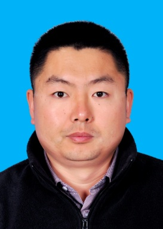

Guoqiang Zhong (仲国强)
Department of Computer Science and Technology
Ocean University of China
Email: gqzhong AT ouc DOT edu DOT cn
Phone: +86-532-66781719
>> return to Vision Lab 
Guoqiang Zhong (仲国强) |
 |
|
Department of Computer Science and Technology |
| 2014.03 - now | Associate professor | Vision Lab, Ocean University of China, Qingdao, China |
| 2011.10 - 2013.07 | Postdoctoral fellow | Supervisor: Prof. Mohamed Cheriet, Synchromedia Laboratory, ETS, Montreal, Canada |
| 2007.09 - 2011.07 | Ph.D | Supervisor: Prof. Cheng-Lin Liu, National Laboratory of Pattern Recognition (NLPR), Institute of Automation, Chinese Academy of Sciences (CASIA), Beijing, China |
| 2011.02 - 2011.05 | Visiting researcher | Samsung Advanced Institute of Technology, Beijing, China. |
| 2009.09 - 2010.01 | Visiting student | Supervisor: Prof. Dit-Yan Yeung, Department of Computer Science and Engineering, Hong Kong University of Science and Technology, Hong Kong, China |
| 2004.09 - 2007.07 | M.S. | Supervisor: Prof. Dazhi Meng, College of Applied Sciences, Beijing University of Technology, Beijing, China |
| 2000.09 - 2004.07 | B.S. | Major: mathematics and applied mathematics, College of Mathematics and Information Sciences, Hebei Normal University, Shijiazhuang, China |
| Undergraduates | Machine learning and large scale data mining (Fall, 2016 -) |
| PhD candidates | Machine learning (Spring, 2014- ) |
| Master students | Elements of deep learning (Spring, 2014- ), Formal methods (Fall, 2014- ) |
| Undergraduates | Experiments on introduction to computer science (Fall, 2014- ), Graph Theory (Spring, 2014- ) |
| PhD candidates | (Co-supervise with Prof. Junyu Dong) Xiaopeng Liu, Qin Zhang, Jianyuan Sun |
| Master students |
(Directly supervise) Yaxin Shi, Peng Zhang, Hui Xu, Xipeng Chu, Shoujun Yan, Benxiu Liu, Yan Zheng, Hui Yao, Xiao Ling, Hongxu Wei, Haizhen Wang, Kang Zhang (Co-supervise with Prof. Junyu Dong) Yuchen Zheng, Xiaowei Zhou (Co-supervise with Prof. Shengke Wang) Xiaoxue Shi |
| Undergraduates | Xuecheng Han, Yutong Liu, Chen Hong, Yanzhang Du, Hao Kong, Chaowei Liang, Zijian Zhang, Yongbin Liu, Lihang Zhou, Jingtang Liang, Hanqing Liu, Yuan Zhuang, Jinjie Gao, Yi Lin, Chunlin Li, Pan Liu, Hongwei Xue |
| Program chair/co-chair |
2012.7 The eleventh International Conference on Information Sciences, Signal Processing and their Applications (ISSPA 2012), poster session, Montreal, Canada 2016.7 Special session on IJCNN (Title: Deep Learning for Brain-Like Computing and Pattern Recognition), Vancouver, Canada 2016.5 CAAI-PR Expert Forum (the 2nd time) 2016.8 CCF-CV Series Lectures (the 19th time) |
| Program committee member | The seventeenth International Conference on Neural Information Processing (ICONIP 2010), ISSPA 2012, ICDAR2015, IJCAI-ML track, ICFHR2016, CVIP2016, IJCNN2016, BICS2016, DLPR2016, CCPR2016 |
| Reviewer for journals | IEEE TCSVT, IEEE TNNLS, Pattern Recognition, Neurocomputing, Journal of Computational Methods in Sciences and Engineering, Autosoft, Big Data Analytics, Acta Automatica Sinica, periodical of Ocean University of China |
| Reviewer for conferences | ICONIP 2010, ICONIP 2011, ISSPA 2012, CCPR 2012, CCDM2014, CCPR2014, ICIMCS2014, IJCAI2015, BIC-TA 2015, ICRA2016, ICPR2016 |
| Organizer | Intelligent Data Analysis Seminar (IDAS 2014) at OUC; Intelligent Data Analysis Seminar (IDAS 2015) and Forum on Marine Big Data Analysis at OUC; pattern recognition and computer vision reading group (2012.3-2013.7) at ETS; machine learning seminar (2008.9-2011.7) at NLPR, CASIA. |